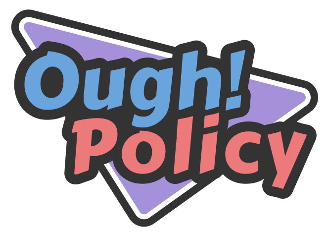

Ough! Policy
A physical political strategy card game.

About the Game
Ough! Policy is a physical strategy card game where players compete in a presidential race by managing Public and Senate Support while attempting to eliminate opposing candidates.
My Role
I worked as one of the game designers for Ough! Policy, with a focus on its core gameplay systems.
Public & Senate System

I designed the Public and Senate support system, which forms the core resource system of Ough! Policy. Each candidate maintains separate Public and Senate values, with Policy cards able to influence either resource throughout the game.
This creates two competing dimensions that players must manage instead of relying on a single health or score value.
Candidate Design
I also contributed to the concept and design direction of the game's Candidates. Candidates were designed with their own identities, different starting Public and Senate values, and candidate-specific abilities.
Abinzo She

God Emperor Lee
.png)
I personally designed Abinzo She and God Emperor Lee, including their starting Public and Senate values and their unique candidate abilities.
These differences give players additional strategic considerations depending on the candidate they choose.
How It Plays
Ough! Policy is played around managing the Public and Senate Support of each candidate. During their turn, players draw Policy cards and decide how to use them to strengthen their own position or weaken their opponent.
Draw
Draw two Policy cards from the deck.
Assign
Assign one Policy to yourself and one to your opponent.
Resolve
Resolve the effects of the played Policy cards.
Ability
Your candidate's ability can be activated at any point during your turn.
Update
Update Public and Senate Support before ending the turn.
A candidate is eliminated if either their Public or Senate Support falls to 0 or below, or rises to 17 or above. Eliminate every opposing candidate to win.
Design & Development
Designing the Public & Senate System
One of my primary contributions to Ough! Policy was designing its Public and Senate Support system. Rather than relying on a single health or scoring resource, I created two separate values that players must manage throughout the game.
Because both excessively high and low support can result in elimination, players cannot simply maximize their resources. Instead, they must consider how each Policy affects their political position and their opponents' positions.
The Challenge: Making Candidates Unique
One of our biggest design challenges was creating and balancing each candidate's unique statistics and abilities.
We wanted to avoid abilities that were merely variations of increasing or decreasing Public and Senate Support by different amounts. Numerical differences alone did not necessarily create distinctive gameplay experiences.
Our goal was to give each candidate a mechanical identity inspired by their fictionalized real-world counterpart. Ideally, choosing a different candidate would also encourage a different way of thinking and making decisions.
Iteration: The Austrian Painter
One example of this challenge was our authoritarian-inspired candidate, the Austrian Painter.
An early version of the character prevented Public Support from dropping below zero. The intention was to represent how an authoritarian regime could control or suppress visible opposition.
However, further historical research challenged our initial interpretation. Authoritarian control does not guarantee genuine public approval, and dissent can emerge even among people who previously supported a regime.
We therefore reconsidered which resource should represent the character's political position. Our revised design focused on Senate Support, reflecting our interpretation of loyalty within the governing structure.
In the final printed version, the candidate's passive ability prevents Senate Support from rising above 16, protecting the character from elimination through that resource's upper threshold.
This iteration demonstrated how further research could change not just a character's theme, but also the rules used to communicate it.
Iteration: God Emperor Lee's Iron Will
God Emperor Lee was one of the candidates I personally designed, drawing inspiration from Singapore's founding Prime Minister, Lee Kuan Yew.
His original ability involved rolling a six-sided die and adding the resulting value to both Public and Senate Support. This was inspired by Singapore's economic transformation under Lee's leadership.
However, we wanted to reduce the game's reliance on dice-based effects and find a more distinctive way to represent the character.
I reconsidered the design after revisiting Lee Kuan Yew's famous statement about the importance of having "that iron" in whoever governs Singapore. This became the inspiration for the ability's name: Iron Will.
Rather than simply increasing resources, I explored how the ability could represent determination and accomplishing something that would normally be impossible.
This led to the final design: once per game, God Emperor Lee can replay a Dirty Tricks card that the player has already played.
By allowing the player to reuse a card that would ordinarily have been spent, Iron Will provides a distinct tactical opportunity without relying on another numerical bonus or dice roll.
Playtesting & Balancing
Throughout development, I participated in playtesting and refining candidate statistics and abilities.
The central challenge was balancing mechanical individuality against competitive fairness. Each ability needed to feel meaningful without undermining the Public and Senate system or making another candidate's abilities feel redundant.
Our iterations showed that character identity could be communicated through unique rules, limitations, and tactical opportunities instead of relying entirely on numerical adjustments.
What I Learned
Working on Ough! Policy strengthened my understanding of how theme and mechanics can reinforce one another.
A memorable character ability should do more than provide an advantage. It should help express that character's identity and encourage players to approach the game differently.
The experience also reinforced the importance of revisiting design assumptions through research and iteration rather than treating an initial concept as final.
Gallery
Play / View the Project
View Ough! Policy on itch.ioLET'S CONNECT
Interested in My Work?
Have a question about this project or want to discuss an opportunity? I'd love to hear from you.
Contact Me ↗